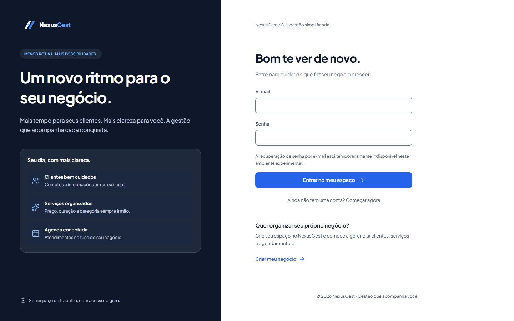

NexusGest
Gestão de negócios. Engenharia de ponta a ponta.
Sistema para pequenos negócios: clientes, serviços e agendamentos. Da API em Java à interface em React, com dados isolados por negócio.
- JWT, renovação de sessão e controle de acesso
- Multi-tenancy e regras de segurança no backend
- Agenda com fuso horário e proteção contra sobreposição
Ambiente experimental gratuito: a API pode demorar a iniciar. Recuperação de senha por e-mail indisponível.

Arquitetura, deploy e limites do experimento
Da interface ao banco
React com TypeScript → API Spring Boot → PostgreSQL. Autorização e isolamento por negócio ficam no servidor. A agenda considera o fuso do negócio e protege reservas concorrentes no banco.
Ambiente experimental
Interface no Cloudflare Pages, API no Render Free e banco no Neon Free. A infraestrutura gratuita está sujeita a suspensão por inatividade, demora na retomada e cotas. A recuperação de senha por e-mail está indisponível neste ambiente. Sem garantia de disponibilidade; use apenas dados de teste.
Código privado. A demonstração permite conhecer a interface; não representa operação comercial.